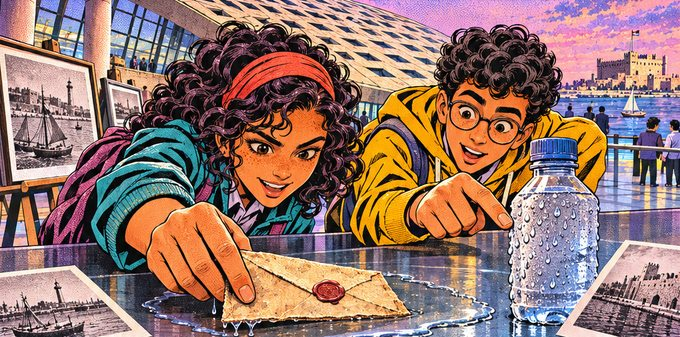
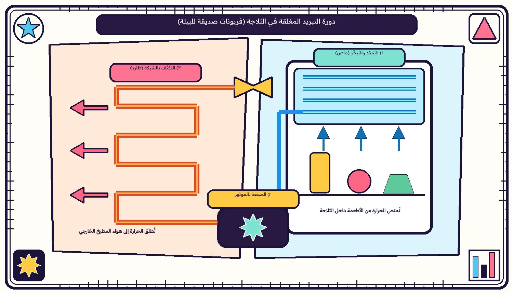
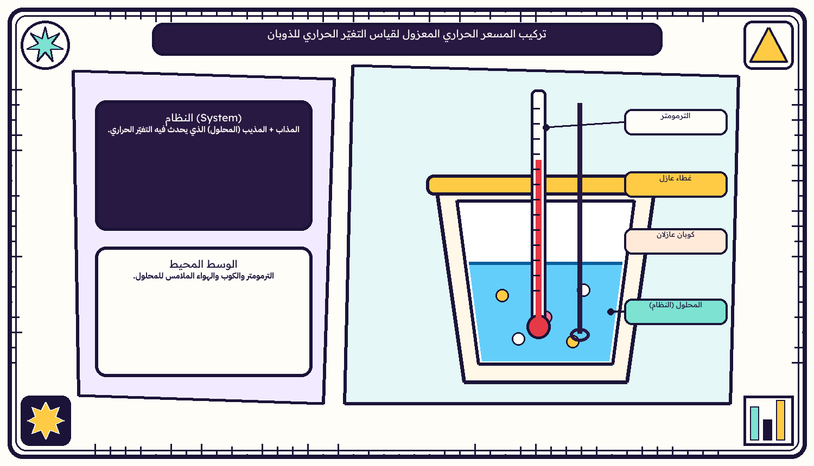
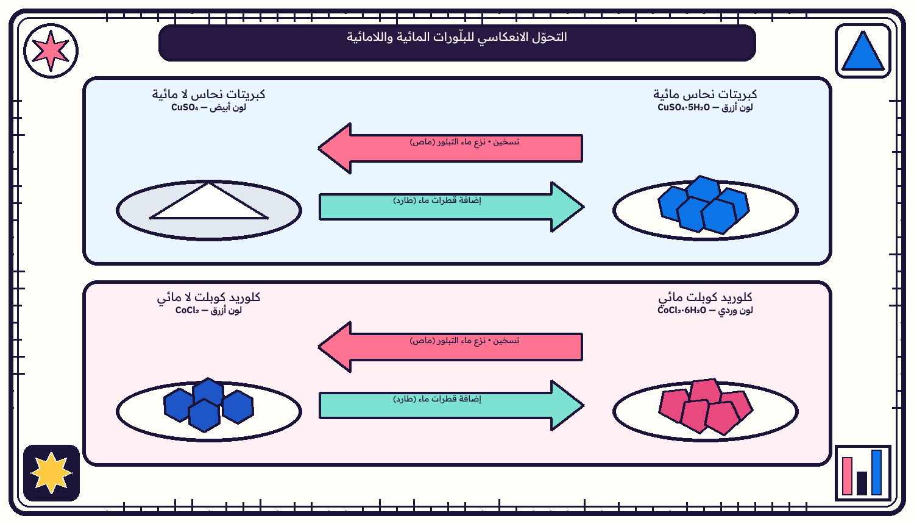
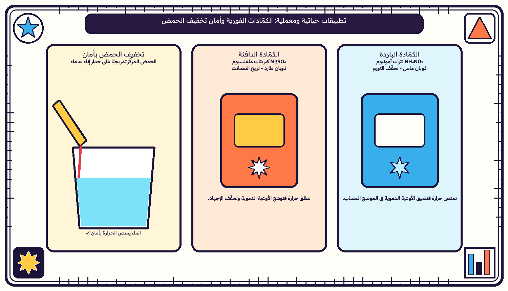
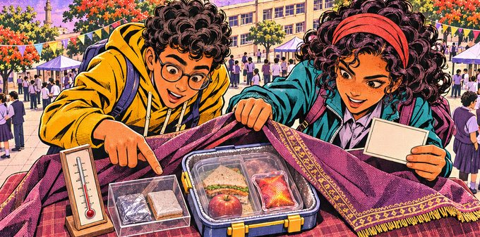

| وجه المقارنة | التغيّر في درجة الحرارة | كمية الطاقة الحرارية |
|---|---|---|
| المعنى العلمي | مقياس لمدى سخونة أو برودة الجسم (متوسط طاقة الحركة) | مقدار الطاقة الحرارية المنتقلة بين النظام والوسط المحيط |
| وحدة القياس | الدرجة المئوية / السيليزية (°س أو °C) بالترمومتر | الجول (J) أو الكيلوجول (kJ) وتتوقف على الكتلة |

| الفئة / المقارنة | ذوبان طارد (ΔT > 0 ، ترتفع T₂) | ذوبان ماص (ΔT < 0 ، تنخفض T₂) |
|---|---|---|
| قواعد وأملاح ١ | هيدروكسيد الصوديوم NaOH(s) | نترات الأمونيوم NH₄NO₃(s) |
| أملاح شائعة ٢ | كلوريد الكالسيوم CaCl₂(s) • كبريتات الماغنسيوم MgSO₄(s) | كبريتات البوتاسيوم K₂SO₄(s) |
| كربونات × بيكربونات | كربونات الصوديوم Na₂CO₃(s) | بيكربونات الصوديوم NaHCO₃(s) |
| ★ نفس الملح في صورتين: قارن الصورة اللامائية والصورة المائية في نفس الصف | ||
| ١. كبريتات النحاس | اللامائية (بيضاء): CuSO₄(s) طارد + | المائية (زرقاء): CuSO₄·5H₂O(s) ماص − |
| ٢. كلوريد الكوبلت | اللامائي (أزرق): CoCl₂(s) طارد + | المائي (وردي): CoCl₂·6H₂O(s) ماص − |
| ٣. كلوريد الليثيوم | اللامائي: LiCl(s) طارد + | المائي (المتهدرت): LiCl·H₂O(s) ماص − |

| كتلة الملح المذاب m (جم) | درجة البداية T₁ (°س) | درجة النهاية بعد ٣٠ ثانية T₂ (°س) | التغيّر في درجة الحرارة ΔT = T₂ − T₁ (°س) |
|---|---|---|---|
| ١ جم | ٢١ | ٢٥٫٥ | .................... |
| ٢ جم | ٢١ | ٣٠ | .................... |
| ٣ جم | ٢١ | ٣٤٫٥ | .................... |
| ٤ جم | ٢١ | ٣٩ | .................... |


| العينة | درجة البداية (°س) | درجة النهاية (°س) | التغيّر (°س) |
|---|---|---|---|
| أ | ٢٤ | ١٨ | …… |
| ب | ١٩ | ١٦ | …… |
| ج | ٢٢ | ٢٦ | …… |
| د | ٢٣ | ٢٢ | …… |